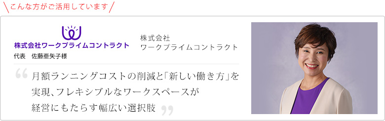
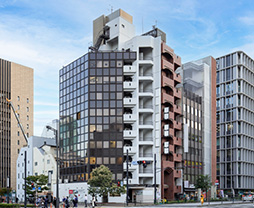

企業紹介
パソコンを中心した精密機器の新規設置、入替、伴う各種設定、修理保守、まで、大規模、小規模問わず、企業や官公庁などの案件をサポートしている、株式会社ワークプライムコントラクトにレンタルオフィスの活用に至った背景やその効果についてお伺いしました。

ご利用いただいているセンタ="/openoffice/オープンオフィス西新橋
丸の内、有楽町、銀座、品川に連なるビジネス街として発達し、旧来より大企業のオフィスが多く存在する信頼が高い住所に、オープンオフィス西新橋があります。丸の内、品川、虎ノ門などのビジネス街を網羅できるビジネスの拠点となります。個室オフィスからシェアオフィス、コワーキングまで多彩なスペースとオフィスプランで様々な事業を支援します。
トータルで比較すると一目瞭然、
レンタルオフィスでコストダウン
御社の事業展開について教えてください。
大きく分けると3種類の事業を行っています。
1つ目はITソリューション事業、当社のコア事業になります。企業や官公庁などを中心とした社員様向けパソコンのキッティング業務を行う物流ITソリューションと、お客様先のオフィス等へ訪問し現地でパソコン等の修理・保守、入れ替え作業を行う現地ITソリューションの2つに分類されます。2つ目は、人材派遣事業と人材紹介事業です。主に物流・機器メーカーに特化し、ニーズに合った人材を投入し、活躍させて頂いています。3つ目は、直近１年くらいで始めた中小企業向けの働き方ITソリューション事業です。これは自社をモデルケースとして「中小企業の今後の働き方」を追求している最中、コロナ禍に突入したことによって急遽サービス化しました。主にテレワーク導入支援になります。例えば、テレワーク化をどのように進めればいいのかわからない、メリット・デメリットはどういうものがあるのか、社員の働き方は実際どうしていこうか、といったお悩みや課題に対してご提案しております。
レンタルオフィスに本社を移転された経緯をお聞かせください。
前述の通り、2018年より「中小企業の働き方」や「テレワークの推進」の追求において、本社の縮小移転やクラウドサービスへの移行といったIT周りの全体な見直しによるコストダウン、IT化に伴う人員の少数精鋭化、といった具合に自社で様々な試行錯誤を行ってきました。その一環とし、2020年10月に本社をオープンオフィス西新橋に移転することしました。
縮小移転を始めとしたアクションを取られた結果、どの程度コストダウンできましたか？
以前の本社は武蔵小杉の賃貸オフィスに所在していました。武蔵小杉の再開発によって10年前の入居時と比較すると賃料が増加していたことと、常駐5名前後に対して広さが30坪とスペースが広すぎたことで、無駄が多いと感じ見直そうと思ったことがプロジェクトのきっかけでした。
2019年1月、開業前の高輪ゲートウェイ駅から5分のオフィスに移転しました。話題性の観点からこの立地を選択しました。広さと賃料を約50%削減、同時に、第一回ICTツール導入とテレワーク化を行いました。Microsoft office 365やチャットワークといったクラウドサービスを活用して社内サーバーへの依存度を減らすことで不要な保守料を削減。社員の在宅勤務を奨励することで交通費や光熱費も削減し、結果的には月額のランニングコストを25万円近く削減することに成功しました。
その後、2020年10月にオープンオフィス西新橋に移転しました。レンタルオフィスに切り替えたことで、固定電話・FAX・複合機や社内サーバーの廃止ができ、保守費用をさらに削減することができました。また、賃料も少し下げられたので、トータルの月額ランニングコストとしては更に10万円近いコストダウンとなりました。
また、賃貸オフィスだと保証金が賃料6か月分必要で、退去時の原状回復費用としてほとんど使用されてしまいます。高輪ゲートウェイの賃貸オフィス入居期間は2年未満と短く、オフィスも綺麗な状態で引き渡しましたが、オーナー側の意向もあり壁紙を全面張り替えるなどの対応がされたためです。その点リージャスは明確で、クリーニング代と、規約に該当する破損などの事項に伴う実費以外は発生しないので、断然メリットが多く、すでに高い費用対効果を出しています。
リージャスのネットワークでテレワークを推進、
ビジネスや人材確保・維持に貢献
リージャスブランドを選択いただいた理由を教えてください。
ビジネスの状況に合わせて別の部屋や拠点への移転、拡張・縮小が可能な柔軟性です。社員の働き方に寄り添いつつ、オフィスのあり方やそれに伴うコストをより柔軟に見直すことができるので、実際に選択肢が広がったと感じます。
そして、大手ならではの拠点の多さです。沖縄で別会社を経営しており、コロナ禍前は定期的に出張しておりましたが、沖縄と首都圏にレンタルオフィスを展開している企業はリージャスしかないですよね。羽田空港にもセンターがあるので、私としてはものすごく助かっています。
社員はMy Regus（リージャスのワークスペース予約専用サイト・アプリ）で、外出時には池袋や渋谷・新宿といったリージャスセンターを活用することができ、電源・Wi-Fiがあるカフェやファミレスを探す手間や、そこで発生する費用を省くことができるので、社員にとってもメリットとなっています。
他社のレンタルオフィスも内見や見積を取りまして、確かにインテリアが魅力的なオフィスもありました。が、物流ソリューションの拠点となっている大田区の倉庫含め、営業で外出が多くオフィスに毎日行くことがない当社のような企業にとっては、全国の県庁所在地をほぼ網羅しているリージャスが費用対効果の観点からも非常に良かったです。
全社的にリージャスをうまくご活用いただいて嬉しいです。
はい。もう1点、人材採用においても戦略的に活用しています。
採用の募集要項や面接時にリージャスのメンバーであることも説明し、各所のリージャスを活用してリモートワークが出来る点、フレキシブルな勤務環境がある事をアピールすることで、より良い人材獲得につなげられております。求職者にとってこのような働き方が出来ることはメリットと感じて貰えているようです。
また、社員の離職率低下にも役立つように感じます。直行直帰時に社員の都合が良い導線上のセンターも利用できますし、在宅勤務が続いている社員には気分転換のために自宅最寄りのセンターで仕事することを勧めています。景色が良いオフィスでコーヒーを飲みながら仕事できるということもまた福利厚生にも繋がります。
このような「中小企業向けの働き方」に対する考え方や、当社で実践した内容やその進捗などを、長年参加している中小企業経営者たちの勉強会メンバーに発信しています。そうすると同じように興味を持った人から連絡をいただくことが多々あり、リージャスの情報を提供しています。「そういう働き方ってできるんだ」「シェアオフィスの活用の可能性って大きいよね」と皆さんおっしゃっています。
レンタルオフィスはイニシャルコストだけ見ると賃貸オフィスも借りられそうな費用感なので賃貸オフィスにしたほうが良いのでは、と思われる方もいます。確かに5年10年単位で同じオフィスを使う場合はそのほうがコストパフォーマンスも良い可能性もありますが、企業も状況に応じてサイズやアイテムを柔軟に変えていくことが求められている時代において、シェアオフィスという選択肢も大変賢い判断だと思います。
御社の今後の展望を教えてください。
コア事業であるITソリューション事業を着実に伸ばしてゆきたいです。製品サイクルが早く多角化するデバイスへの技能や知見を深めていくとともに、世間のテレワーク化に伴うサービスの需要増加にタイムリーに対応できるような規模や体制を構築することで、他社との差別化をしていこうと思います。案件数が多い首都圏に基盤を置きつつ、静岡県など、地方都市部でのプロジクトにも、費用対効果を感じて頂けるご提案をしており、発生案件単位でお客様にとって丁度良い、運営ができる会社を目指してゆきます。
また、「中小企業向けの働き方」についてはライフワークとして継続していきます。中小企業がこれまでの枠にとらわれずに色んなことに挑戦していかないとこの不況を乗り切ることができないと多くの経営者が考えているはずです。自分たちが持っているノウハウを少しでも提供し、新しい働き方や会社の方針転換、ICTツールの導入などを進めていただければと思っています。もちろん、当社のリソースだけではサポートしきれないので、システム・ハードウェア・社労士・チームビルディングや組織活性をそれぞれ得意とする3社協業で、「テレワーク導入全力応援プロジェクト」を始動しております。ぜひ、こちらのサービスサイトもご覧頂き、何から始めたらよいか、どう進めたらよいか、という不安や悩みにお役に立てるような、寄り添うITソリューション、を実現してゆきたいと思っております。
- 企業データ株式会社 Work Prime Contract
- 設立：2006年5月26日
- 業務内容：物流ITソリューション、現地ITソリューション、
働き方ITソリューション、労働者派遣、有料職業紹介 - リージャスご利用歴：2か月
- 利用サービス：="/openoffice/href="/openoffice/nishishinbashi/" target="">オープンオフィス西新橋
-
IT技術の伴走者：わたしたちは、物流・保守・働き方改革の技能を通し、IT技術の発展のため、最適な伴走者となります。できないを言わない、できるを考え続けます。
https://wpc.co.jp/ : 公式サイト
https://telework-pj.com/ :
テレワーク導入 全力応援プロジェクト